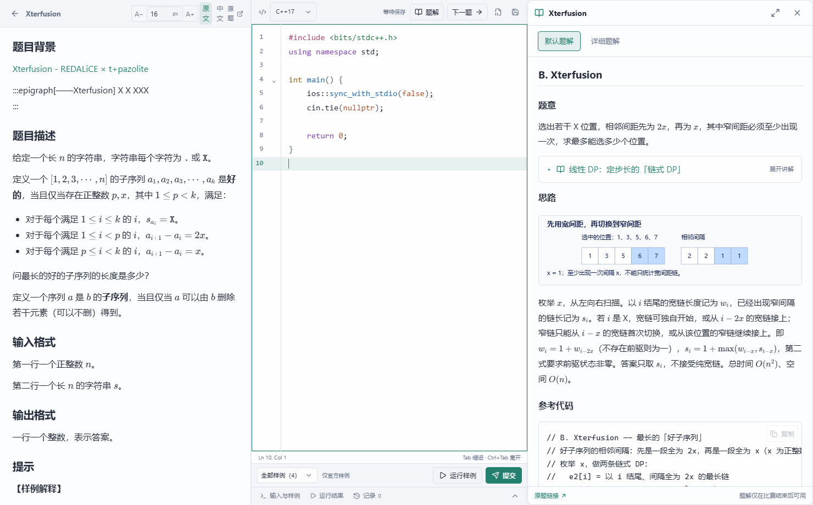

v1.4.31 公共内容
12,271 条原题记录、9,436 份题面存档、1,674 组默认/详细题解、467 篇讲义、564 个题单。QOJ 共 65 题，包括山东省赛 2026 与长春区域赛 2026 各完整 13 题。长春交互/通信题保留特殊类型，不作为普通模拟赛整场开赛。存档数量不代表所有题目完整可用。
1.4.31 已正式发布 · 界面与推荐修正 · QOJ 平台贯通 · 本版说明
题库、题解、C++ / Python 编辑、本地样例、原站提交与学习记录集中在同一工作台。题目来源支持牛客、Codeforces、AtCoder、洛谷与 QOJ。
新账号从编程基础题单开始。下一步推荐依据真实复习任务、前置知识、课程位置和独立作答表现，连接题单、模板、配套练习和算法实验室。

12,271 条原题记录、9,436 份题面存档、1,674 组默认/详细题解、467 篇讲义、564 个题单。QOJ 共 65 题，包括山东省赛 2026 与长春区域赛 2026 各完整 13 题。长春交互/通信题保留特殊类型，不作为普通模拟赛整场开赛。存档数量不代表所有题目完整可用。
能力与知识掌握度共用 Rasch 后验，结合近期独立作答、失败、重试和难度可信度，展示保守参考、模型区间与逐题证据。同原题去重，经验和奖励保留。
Lv1 训练和题单，Lv2 题库和排行榜，Lv3 比赛和模拟赛，Lv4 实验室、模板和从零讲，Lv5 成长和活动。提交记录与设置始终开放；隐藏板块同步隐藏关联入口和指引。
已验证且凭据有效的同账号工作区，在网络不可用时可继续阅读缓存、保存草稿和运行样例；联网先合并再同步。明确撤销或从未验证的账号不绕过登录保护。
SQLite 在线备份包含已提交 WAL，验证重开和摘要后按最近、每日、每周与数量容量保留恢复点；手动和未知旧副本独立保护。退出先保存本机草稿。
更多翻译、难度人工审查、牛客题单和课程继续分批更新。兼容公共内容表的题解、题单、难度和完整新题可热更新；新增互动课程行为和程序功能需要安装新版本。
本机用户版与私有管理员版分别验证；原代码、草稿、身份设置、浏览器存储与分块同步保留。不创建生产测试账号，不向真实原站发送测试提交。管理员程序及个人恢复材料只留本机。
实际交付证据 →公开 1.4.31 的 GitHub 与国内资产核对文件大小和 SHA-256，旧版可在登录前更新；该正式版完整远端 backend、frontend 和 leaderboard CI 已通过。共享服务现为 1.2.9 / 分块协议 2，31 补丁核对后复用，不重启服务或修改 SQL/Caddy。
已发布版远端 CI →